Нигерия - Найра
5 найр
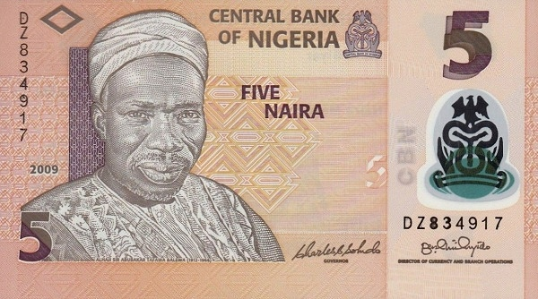 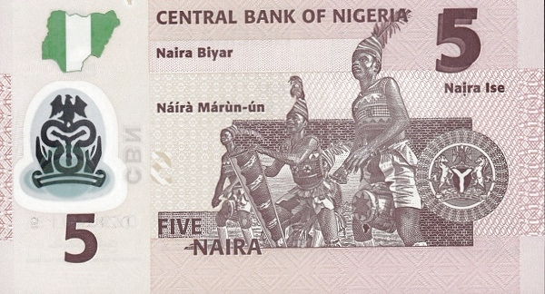Лицевая сторона - портрет Алхаджи Балевы
Обратная сторона - барабанщики в традиционных костюмах
10 найр
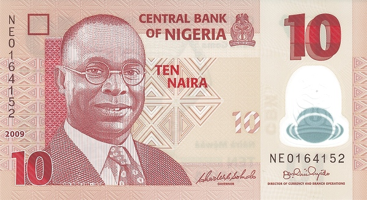 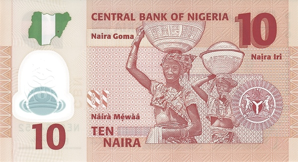Лицевая сторона - портрет Альвана Икоку (англ. Alvan Ikoku)
Обратная сторона - женщины с сосудами на голове
20 найр
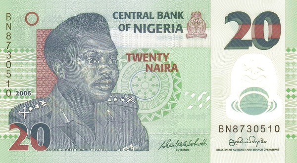 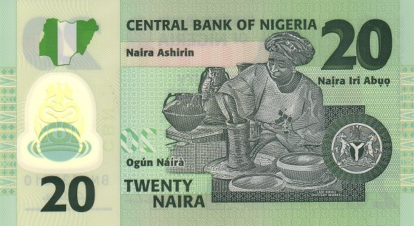Лицевая сторона - портрет Мурталы Мухаммеда (англ. Murtala Mohammed)
Обратная сторона - Леди Квали, делающая гончарные изделия
50 найр
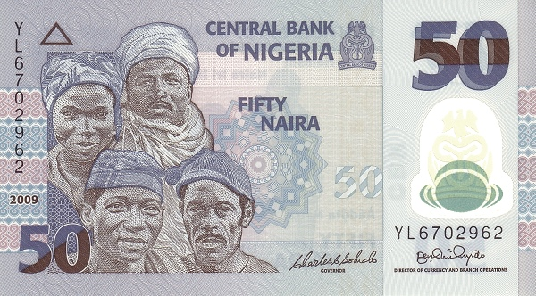 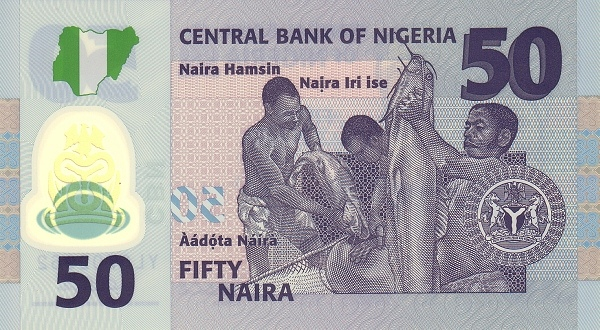Лицевая сторона - портреты нигерийцев
Обратная сторона - рыболовы за работой
100 найр
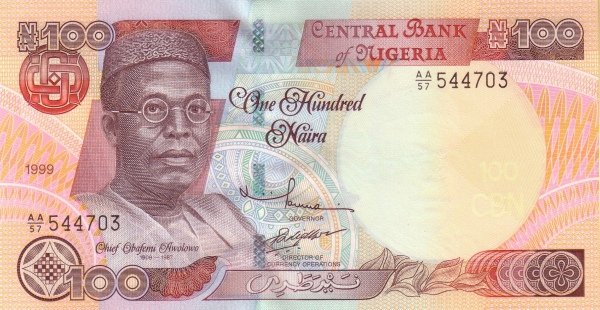 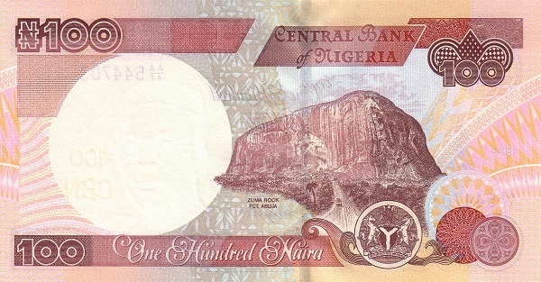Лицевая сторона - портрет Обафеми Аволово
Обратная сторона - скала Зума (англ. Zuma Rock)
200 найр
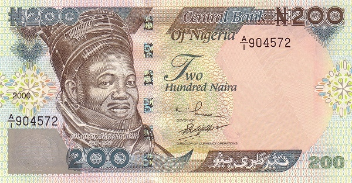 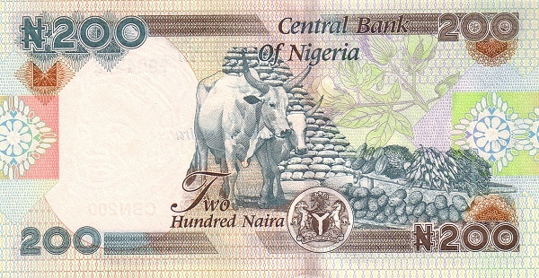Лицевая сторона - портрет Ахмаду Белло (англ. Ahmadu Bello)
Обратная сторона - два буйвола и с/х продукция
500 найр
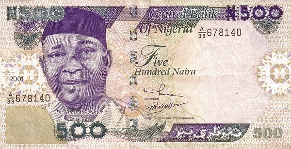 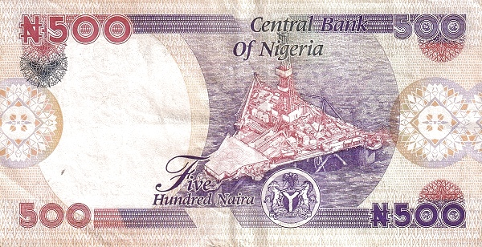Лицевая сторона - портрет Ннамди Азикиве
Обратная сторона - морская нефтяная платформа
1000 найр
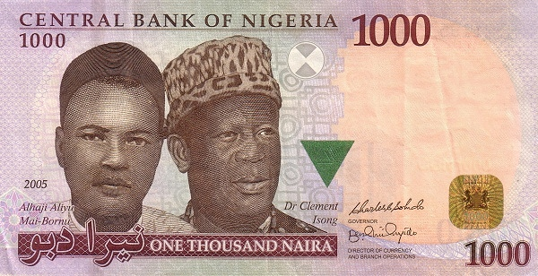 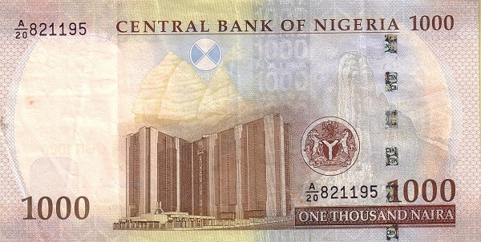Лицевая сторона - портреты Али Маи-Борну (англ. Aliyu Mai-Bornu) и Клемента Изонга (англ. Clement Isong)
Обратная сторона - здание Центрального банка в г. Абуджа